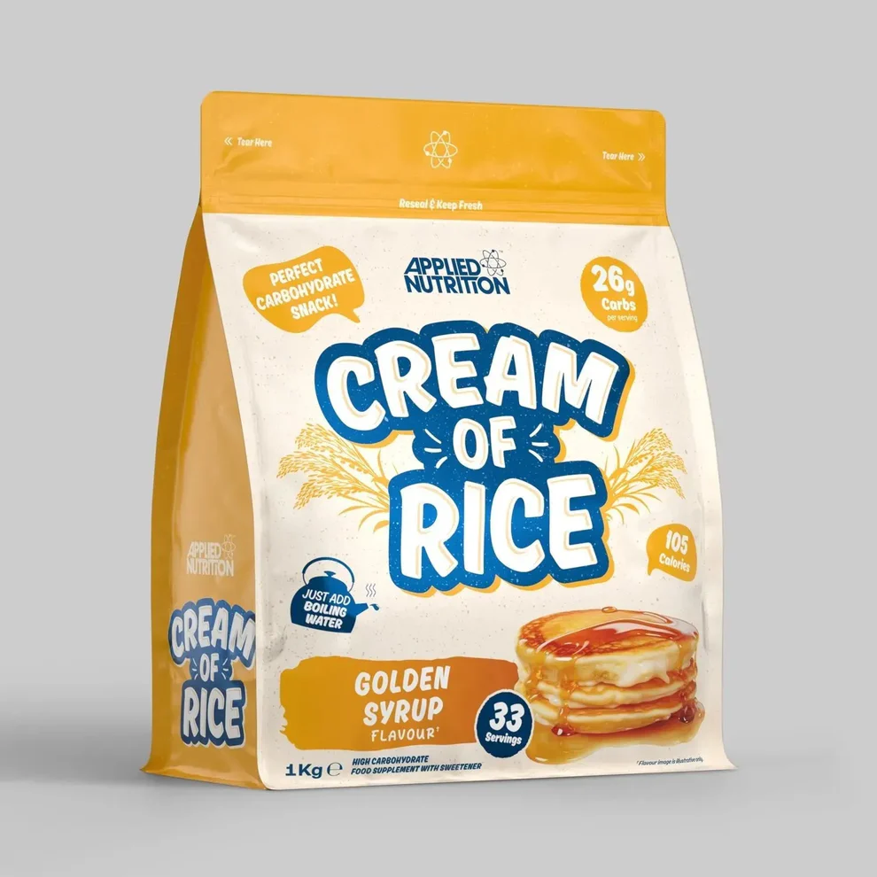

En stockCrème de riz - Saveur Sirop doré (1 kg)
Description
40,00 €
La Crème de Riz Applied Nutrition est une excellente source de glucides complexes, idéale pour apporter de l'énergie avant un entraînement ou favoriser la récupération après l'effort. Sa texture onctueuse et sa saveur sirop doré en font un petit-déjeuner ou une collation particulièrement gourmande.
Facile à préparer et rapide à digérer, elle convient parfaitement aux sportifs recherchant une source d'énergie de qualité.
- Source de glucides.
- Préparation instantanée.
- Texture crémeuse.
- Digestion facile.
- Format 1 kg.
A savoir
Utilisation suggérée
Mélanger une portion avec de l'eau chaude ou du lait jusqu'à obtenir une texture homogène. À consommer au petit-déjeuner, avant ou après l'entraînement.